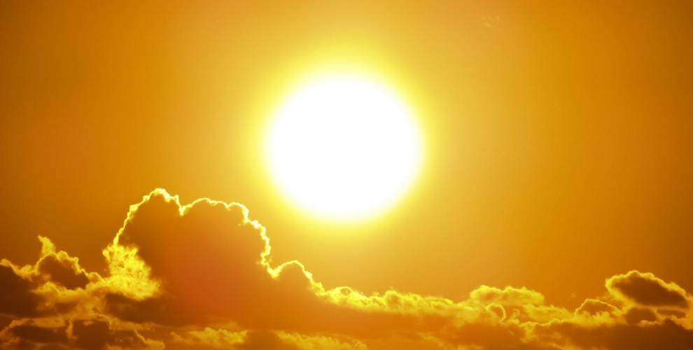
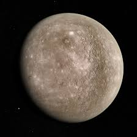

El sistema solar
- El sol
- Mercurio

-
El sol:  El Sol es una estrella de aproximadamente 5 000 millones de años de edad y se encuentra
a 150 millones de kilómetros de la Tierra. Tiene forma esférica, con un diámetro 1,4 millones de kilómetros (más de 109 veces el diámetro de la Tierra) y
le toma 25 días, 9 horas y 7 minutos realizar un giro completo sobre su propio eje. Está compuesto en un 98% de helio e hidrógeno y su masa es 333 000 veces la de la
Tierra. Eso corresponde a más del 99% de toda la masa del sistema solar.
El Sol es el elemento más grande y brillante del sistema solar. Es el único que produce su propia luz mediante la fusión continua de átomos de hidrógeno
en átomos de helio. Cada segundo el Sol transforma 600 millones de toneladas de hidrógeno en 596 millones de toneladas de helio gracias a las grandes temperaturas
y presiones de su interior. Los 4 millones de toneladas restantes se transforman en energía gracias a la famosa ecuación de Albert Einstein. Esa energía escapa del
Sol en forma de luz y calor. La energía que emite el Sol en un segundo sería suficiente para satisfacer las necesidades de la humanidad por más de 500 000 años si
la pudiéramos capturar y almacenar toda.
El Sol es una esfera gigante de gases calientes. A diferentes profundidades la temperatura y la presión cambian, dándole una estructura con diferentes capas.

-
Mercurio :
Mercurio es un planeta sólido y rocoso, es el planeta más cercano al Sol y es también el más pequeño de todos los planetas del Sistema Solar.
Es sólo un poco más grande que la Luna, el satélite natural de la Tierra, ambos cuerpos celestes se caracterizan por tener una superficie cubierta
de cráteres. Además, cuenta con terrenos lisos y escarpados, así como acantilados, algunas de estas formaciones se extienden por varios cientos de
kilómetros y tienen hasta 1 milla de altura. A diferencia de la Luna, Mercurio cuenta con la presencia de hielo. Debido a la delgadez de su capa atmosférica,
sus temperaturas son extremas: durante el día pueden alcanzar los 427-430° Celsius y durante la noche -180° Celsius.
Dicho planeta se conoce por tener una densidad alta y esto es debido a que posee un núcleo metálico cuyo radio es de aproximadamente 2,000 kilómetros.
El pequeño planeta cuenta con cuencas de impacto muy grandes, como Caloris de 1.550Km de diámetro y Rachmaninoff con 306 Km de diámetro, estos aparecieron o se crearon, gracias a los impactos de asteroides. 1
También posee acantilados y grandes áreas de terreno liso, con grandes distancias algunos alcanzan una milla de alto, todo esto es debido a que el planeta se enfrió
y se contrajo durante miles de millones de años desde que se formó. Como posee grandes cráteres, el planeta puede tener hielo de agua en los polos norte y sur dentro
de ellos, pero solo en las partes donde permanece la sombra.